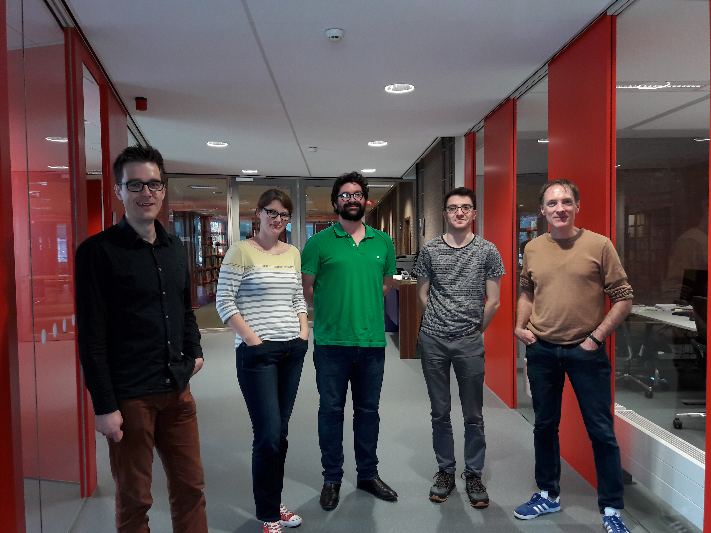
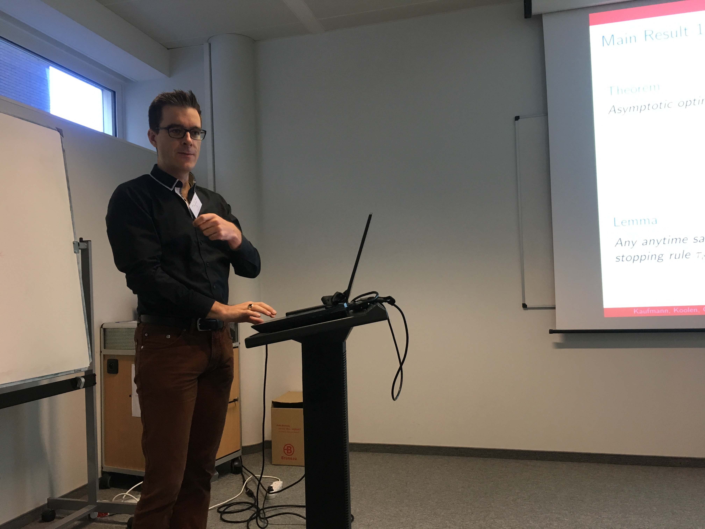
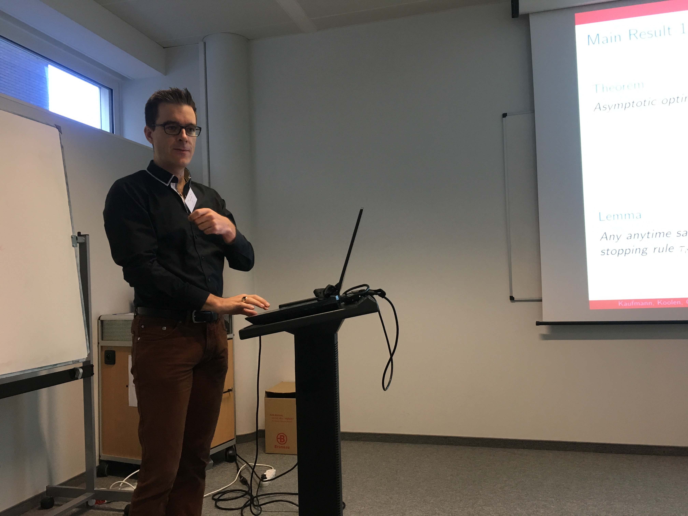
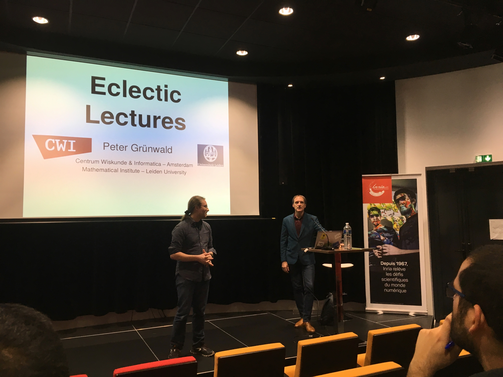
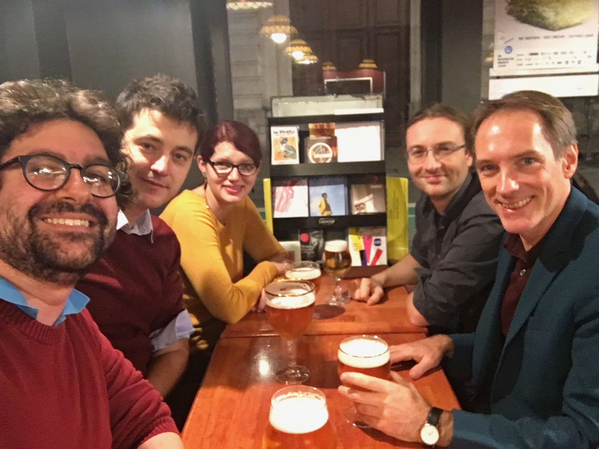
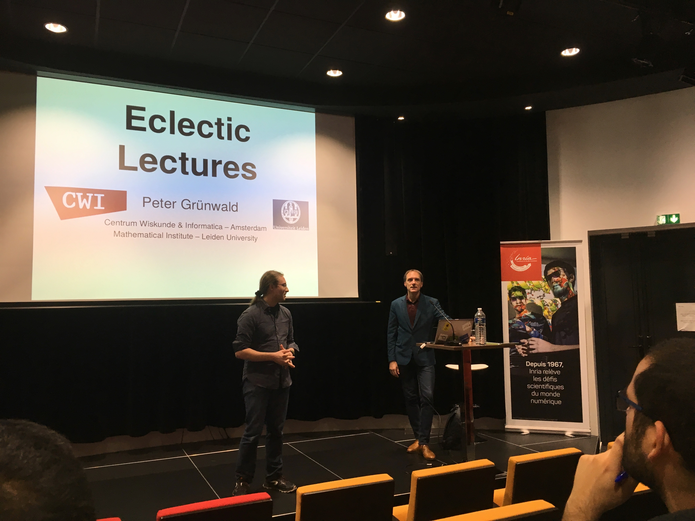
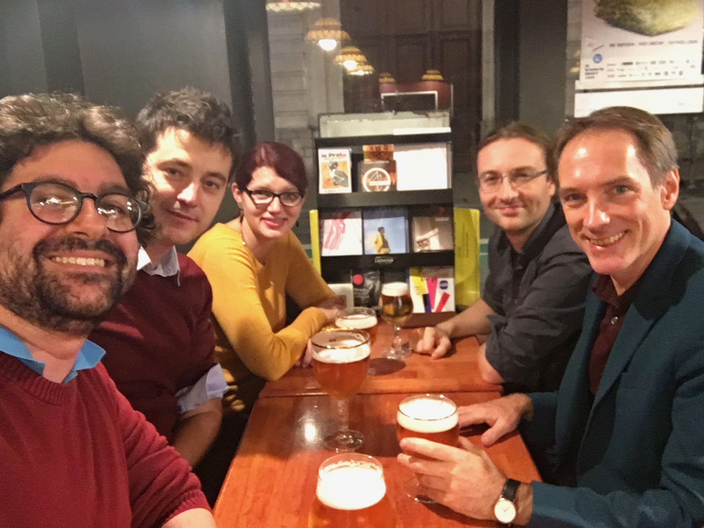

Intro

See the official announcement on Inria's website.
This project roots in statistical learning theory, which can be viewed as the theoretical foundations of machine learning. The most common framework is a setup in which one is given n training examples, and the goal is to build a predictor that would be efficient on new (similar) data. This efficiency should be supported by PAC (Probably Approximately Correct) guarantees, e.g. upper bounds on the excess risk of a predictor that hold with high probability. Such guarantees however often hold under stringent assumptions which are typically never met in real-life application, e.g., independent, identically distributed data. More realistic modelling of data has triggered many research efforts in several directions: first, accommodating possible data (e.g., dependent, heavy-tailed), and second, in the direction of sequential learning, in which the predictor can be built on the fly, while new data is gathered. We believe that an ever more realistic paradigm is active learning, a setup in which the learner actively requests data (possibly facing constraints, such as storage, velocity, cost, etc.) and adapts its queries to optimize its performance. The 3-years objective of 6PAC (where 6 stands for Sequential, Active, Efficient, Structured, Ideal, Safe - the six research directions we intend to contribute to) is to pave the way to new PAC generalization and sample-complexity upper and lower bounds beyond batch learning. Our ambition is to contribute to several learning setups, ranging from sequential learning (where data streams are collected) to adaptive and active learning (where data streams are requested by the learning algorithm).
Team

6PAC is a joint research team between CWI and Inria and includes 4 researchers.
Events
-
Wouter Koolen visited Inria Lille - Nord Europe for about two weeks in May 2018, to work with Emilie Kaufmann. Their work has been accepted to NeurIPS 2018.
-
Benjamin Guedj and Wouter Koolen gave talks at the 2nd CWI-Inria workshop, at the Inria Paris research center on September 25--26, 2018.
Benjamin's talk: "A quasi-Bayesian perspective to Machine Learning"
Wouter's talk: "Sequential Test for the Lowest Mean: From Thompson to Murphy Sampling"
-
Wouter Koolen visited Inria Lille - Nord Europe for about a week in September-October 2018, to work with Emilie Kaufmann.
-
Peter Grünwald gave four 2-hours lectures at Inria Lille - Nord Europe in November 2018. Attendance of about 50 people.
-
Emilie Kaufmann visited CWI for about a week in October 2018 to work with Wouter Koolen.
-
Emilie Kaufmann visited CWI for about a week in February 2019 to work with Wouter Koolen.
-
Rianne de Heide (PhD student, CWI, advised by Peter Grünwald and Wouter Koolen) visited Inria Lille - Nord Europe from April 2019 to August 2019, to work with Emilie Kaufmann.
 

 



Papers
This page contains the list of research papers related to the 6PAC project.
-
Sequential test for the lowest mean: From Thompson to Murphy sampling
Emilie Kaufmann, Wouter M. Koolen, Aurélien Garivier
Advances in Neural Information Processing Systems (NeurIPS), 2018
-
Mixture Martingales Revisited with Applications to Sequential Tests and Confidence Intervals
Emilie Kaufmann, Wouter M. Koolen
Preprint
-
Non-Asymptotic Pure Exploration by Solving Games
Rémy Degenne, Wouter M. Koolen, Pierre Ménard
Advances in Neural Information Processing Systems (NeurIPS), 2019
-
Pure Exploration with Multiple Correct Answers
Rémy Degenne, Wouter M. Koolen
Advances in Neural Information Processing Systems (NeurIPS), 2019
-
PAC-Bayes Un-Expected Bernstein Inequality
Zakaria Mhammedi, Peter Grünwald, Benjamin Guedj
Advances in Neural Information Processing Systems (NeurIPS), 2019
-
Dichotomize and Generalize: PAC-Bayesian Binary Activated Deep Neural Networks
Gaël Letarte, Pascal Germain, Benjamin Guedj, François Laviolette
Advances in Neural Information Processing Systems (NeurIPS), 2019
Contact
Link to Benjamin Guedj's webpage.
Link to Peter Grünwald's webpage.